<nav class="secondary-bg-color d-flex space-between">
  
  <span class="p-1-y line-height-20">Timetracker</span>
  <span (click)="login()"
        routerLink="/login"
        class="m-2-right p-1 hover-effect line-height-20">
    Login
  </span>
</nav>
